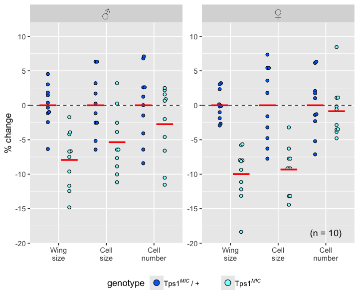

The ggprism package provides various themes, palettes, and other useful functions to customise ggplots and give them the ‘GraphPad Prism’ look.
Install
Install the latest version from CRAN:
install.packages("ggprism")Install the development version from GitHub:
remotes::install_github("csdaw/ggprism")How to Use
See the Getting Started page for a quick overview of ggprism features. Detailed examples and instructions can be found below and on the ggprism website.
library(ggplot2)
library(ggprism)
tg <- ToothGrowth
tg$dose <- as.factor(tg$dose)
base <- ggplot(tg, aes(x = dose, y = len)) +
geom_violin(aes(colour = dose, fill = dose), trim = FALSE) +
geom_boxplot(aes(fill = dose), width = 0.2, colour = "black") +
scale_y_continuous(limits = c(-5, 40))
p_vals <- tibble::tribble(
~group1, ~group2, ~p.adj, ~y.position,
"0.5", "1", 8.80e-14, 35,
"0.5", "2", 1.27e-7, 39
)
base
base +
scale_color_prism("floral") +
scale_fill_prism("floral") +
guides(y = "prism_offset_minor") +
theme_prism(base_size = 16) +
theme(legend.position = "none") +
add_pvalue(p_vals, label = "p = {p.adj}", tip.length = 0, label.size = 4)

Feedback and Contributions
Any feedback, questions, and suggestions are welcome and should be shared via GitHub discussions.
Bug reports should be submitted via GitHub issues with a minimal reproducible example, e.g. using the reprex package.
Contributions to ggprism are also welcome and pull requires should also be submitted via GitHub issues. Please fork/clone this repository and create a new branch to develop your contribution in. Some ways to contribute might include:
- Updates and corrections to documentation
- Examples and vignettes for existing functions
- Bug fixes
- New functions with associated documentation, examples, and tests
Cite
I would be very grateful if you could cite this package if you use it in your publication. Use citation("ggprism") or for convenience:
Charlotte Dawson (2021). ggprism: A ‘ggplot2’ Extension Inspired by ‘GraphPad Prism’. R package version 1.0.1. https://cran.r-project.org/package=ggprism
More Examples
Recreates this figure from the GraphPad Prism website. See this vignette for the source code and step-by-step instructions.


Recreates Figure 2B from Matsushita & Nishimura (2020), which was originally created using GraphPad Prism. See this vignette for the source code and step-by-step instructions.


{kind=link}